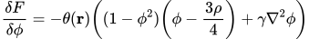
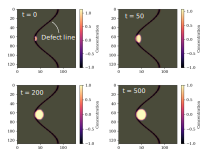

Shrinking Dimer Dynamics

This example goes through the basic theory behind Shrinking Dimer Dynamics (SDD), as well as application for identifying the critical droplet size for heterogenous nucleation. Several phase field equations are derived from a an energy functional that depends on a set of fields φi.
where f({φi}) is a bulk energy density that depends on all the fields, and γi are gradient coefficients that adds an energy penalty for forming interfaces between the various fields. From the energy functional we can define a generalized force acting on the field as the functional derivative of the energy with respect to each field. Furthermore, if we define the equation motion such that the field evolves in the direction of the negative gradient of the force, the fields will eventually end up in a local minimum.
where L is a constant that controls how rapidly the field changes. For several applications, the local energy minimum is not the most interesting solution, but rather the saddle points. By introducing a small change to the equation of motion above, we can get the fields to evolve towards a saddle point instead. First, we introduce an "unstable" direction v. The reason why it is called "unstable" will become clear later. We want the system to move along the positive force direction parallel to v and along the negative force in all other directions. For simplivity we label the generalized force q in the following. The component of q on along v is given by q∥ = vvTq. We can, thus, flip the sign of the component of the force along v, while leaving the other directions unchanged, by appliying the operation I - 2vvT to the force vector. Thus, the equation of motion for the field becomes
The "unstable" direction v is still unknown. However, we can find an equation of motion such that it aligns with the underlying unstable direction. First, we calculate the generalized force at two shifted positions q1 = q({φi} - 0.5lv) and q2 = q({φi} + 0.5lv), where l is the length. If we now imagine that the dimer is a "rod" of length l and orientation v, we can calculate the torque acting on the rod.
The component of
where τ is an artificial time constant controlling how quickly the orientation vector responds to the applie torque. The last step, is to define an equation for the length of the dimer. For convergence, it is important that the length shrinks to zero as the time approaches infinity [1]. We adopt the following equation for the dimer length
Application To Heterogeneous Nucleation
As an example case, we apply the approach outlined above to solve the problem initially studied by Zhang et al. [2]. We consider a model that has two stable phases φ=-1 and φ = 1. The functional at hand is
The generalized force is therefore given by
The function θ describes an inhomogeneity and is here given by
where α=0.99 is used in the present case. The effect of the inhomogeneity is that any variation in the field φ "costs" less energy if it happens at the inhomogeneity. By starting the system from a small semi-circle located at the inhomogeneity, we can evolve the equations until it stops at the saddle point.
We observe that the critical size of the droplet is affected by the inhomogeneity and is clearly not circular as it would be if there was no inhomogeneity present.